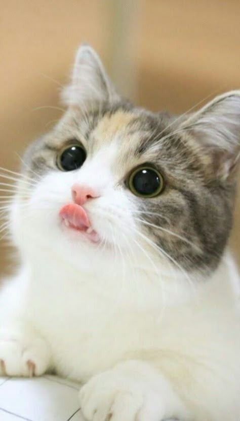
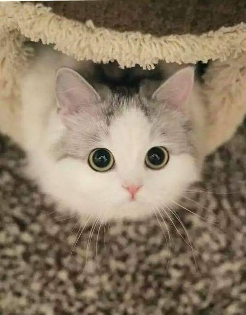

고양이는 약 1만 년 전 아프리카들고양이에서 유래한 독립적이고 영역 중심적인 육식 포유류입니다.

사람보다 7배나 많은 빛을 수용하여 어두운 곳에서 잘 보고, 청각은 개보다 예민하며, 수염으로 공간 감지 및 사냥감을 파악합니다.
일자로 세우면 반가움, 살랑거리면 고민이나 불만, 펑크 나면 놀람/위협입니다.

외부 활동보다는 자신의 영역(집) 내 안전을 중요시하며, 주로 밤에 활동합니다.